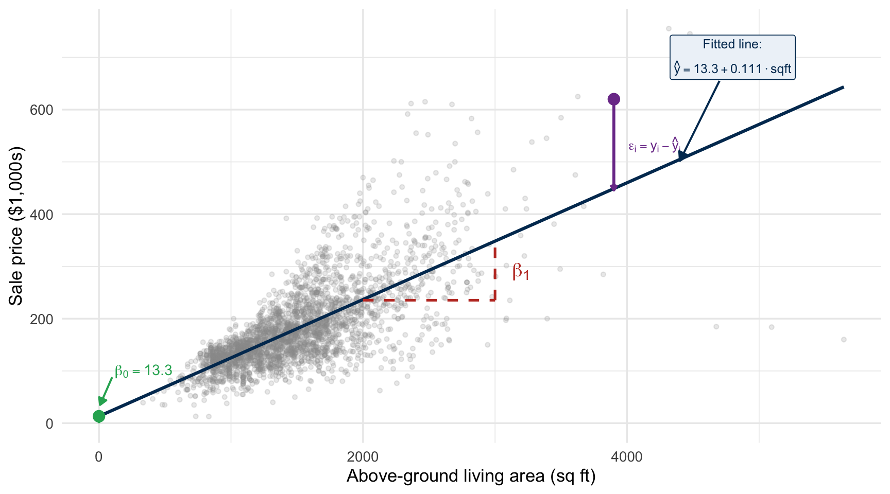

Lecture 1: What is Regression?
PSTAT 126 — Linear Regression
Annie Adams
UC Santa Barbara
2026-09-28
Learning Objectives
By the end of today you will be able to:
- Explain the historical origin of “regression” and what regression to the mean means
- Describe what a regression model is, what questions it can answer, and when to use it
- Write the simple linear regression model and identify its components
- Interpret a regression coefficient as a comparison, not a causal effect
Historical Origins of Regression
Francis Galton and Heredity
In the 1880s, Francis Galton studied the relationship between parents’ heights and their children’s heights.
His finding: Tall parents tend to have taller children who are shorter than the parents. Short parents tend to have shorter children who are taller than the parents.
Children’s heights “regressed” back toward the population mean.
This is the origin of the word “regression.”
What is a Statistical Model?
What is a Statistical Model?
A statistical model is a way of describing real-world phenomena using mathematical relationships. It takes data as input and creates a structured way of understanding how variables relate to one another, and how those relationships can be used to predict an outcome.
\[y = f(x) + \varepsilon\]
- \(y\): outcome of interest (response variable)
- \(x\): predictor (explanatory variable)
- \(f(x)\): systematic component — what we can explain
- \(\varepsilon\): random error — irreducible noise
Regression is the most widely used class of statistical models.
Why Regression?
Regression lets us answer questions like:
- How does income relate to years of education?
- Does economic growth predict election outcomes?
- What is the average difference in test scores between two groups, holding other factors constant?
- Given a new observation, what do we predict for \(y\)?
When do we use Regression?
Regression analysis is used for explaining or modelings the relationship between a response variable (\(Y\)) and one or more predictors (\(X_1,...X_p\)).
The response variable must be continuous, but the predictors can be continuous, discrete, or categorical.
Discrete vs Continuous Refresher

When do we use Regression?
Regression analysis is used for explaining or modelings the relationship between a response variable (\(Y\)) and one or more predictors (\(X_1,...X_p\)).
The response variable must be continuous, but the predictors can be continuous, discrete, or categorical.
Regression can be used for:
- Prediction of future observations
- Assesmemt of the effect or relationship between predictor variables and the response variable
- A general description of the data structure
Forms of Regression Models
The regression framework is flexible enough to handle many data structures:
| Model Type | Form |
|---|---|
| Simple linear | \(y = \beta_0 + \beta_1 x + \varepsilon\) |
| Multiple linear | \(y = \beta_0 + \beta_1 x_1 + \cdots + \beta_p x_p + \varepsilon\) |
| Log-transformed | \(\log(y) = \beta_0 + \beta_1 x + \varepsilon\) |
| With interactions | \(y = \beta_0 + \beta_1 x_1 + \beta_2 x_2 + \beta_3 x_1 x_2 + \varepsilon\) |
| Logistic | \(\log\!\left(\frac{p}{1-p}\right) = \beta_0 + \beta_1 x\) |
A Motivating Example
Predicting House Prices
Question: Can the size of a house predict its sale price?
Data: 2,930 home sales in Ames, Iowa (De Cock 2011)
- Outcome \(y\): sale price ($1,000s)
- Predictor \(x\): above-ground living area (square feet)
Turn & Talk
Is the outcome variable discrete or continuous? What about the predictor variable? How strong should this relationship be? Do you think it will be positive or negative?
The Ames Housing Data

What patterns do you notice in the scatter plot?
The Simple Linear Regression Model
Simple Linear Regression
The simple linear regression model relates one predictor to a continuous outcome:
\[y_i = \beta_0 + \beta_1 x_i + \varepsilon_i\]
- \(y_i\): observed outcome for unit \(i\)
- \(x_i\): predictor for unit \(i\)
- \(\beta_0\)(intercept): expected value of \(y\) when \(x = 0\)
- \(\beta_1\)(slope): expected change in \(y\) per one-unit increase in \(x\)
- \(\varepsilon_i \overset{\text{iid}}{\sim} \mathcal{N}(0, \sigma^2)\): random error
Interpreting Slope and Intercept
For the Ames housing model, fitting gives: \[\widehat{\text{price}} = 13.3 + 0.111 \times \text{sqft}\]
Intercept (\(\hat{\beta}_0 = 13.3\)): a house with 0 sq ft is predicted to sell for $13,300 — not meaningful on its own, but a necessary mathematical anchor
Slope (\(\hat{\beta}_1 = 0.111\)): each additional square foot of living area is associated with $111 more in sale price, on average
Adding the Fitted Line

Least Squares Estimation
How do we pick \(\beta_0\) and \(\beta_1\)?
We need a rule to pick the “best” \(\hat{\beta}_0\) and \(\hat{\beta}_1\). To do so, we want to make prediction errors small across all observations simultaneously.
The residual for observation \(i\) is: \[e_i = y_i - \hat{y}_i\]
where \(\hat{y}_i\) (“y-hat sub \(i\)”) is the predicted value \(\hat{\beta}_0 + \hat{\beta}_1 x_i\)
To find the best line, we minimize the Residual Sum of Squares: \[\text{RSS} = \sum_{i=1}^n e_i^2 = \sum_{i=1}^n (y_i - \hat{y}_i)^2\]
We square the residuals so positive and negative errors don’t cancel, and so large errors are penalized more heavily.
The Least Squares Criterion
Wang, PSTAT 126 Notes (hand1.pdf), p. 17 · ROS Ch. 8.1
From the previous slide, \(e_i = y_i - \hat{y}_i\). Since the candidate line predicts \(\hat{y}_i = \beta_0 + \beta_1 x_i\), substituting gives:
\[e_i = y_i - \beta_0 - \beta_1 x_i\]
So the Residual Sum of Squares is:
\[\text{RSS}(\beta_0, \beta_1) = \sum_{i=1}^{n} e_i^2 = \sum_{i=1}^{n}(y_i - \beta_0 - \beta_1 x_i)^2\]
Goal: choose \(\hat{\beta}_0\) and \(\hat{\beta}_1\) to minimize RSS.
The Normal Equations
Wang, PSTAT 126 Notes (hand1.pdf), p. 17 · ROS Ch. 8.1
RSS is a smooth function of \(\beta_0\) and \(\beta_1\), so we minimize by calculus. Setting both partial derivatives to zero gives the normal equations:
\[\frac{\partial \text{RSS}}{\partial \beta_0} = 0 \;\Rightarrow\; \sum_{i=1}^n (y_i - \beta_0 - \beta_1 x_i) = 0\]
\[\frac{\partial \text{RSS}}{\partial \beta_1} = 0 \;\Rightarrow\; \sum_{i=1}^n x_i(y_i - \beta_0 - \beta_1 x_i) = 0\]
Note
The first equation says the residuals sum to zero — the line is centered on the data. The second says the residuals are uncorrelated with \(x\) — no systematic trend is left over.
Solving the Normal Equations
Wang, PSTAT 126 Notes (hand1.pdf), p. 18
Step 1 — solve equation 1 for \(\hat{\beta}_0\):
\[\sum_{i=1}^n(y_i - \beta_0 - \beta_1 x_i) = 0 \;\Rightarrow\; n\bar{y} - n\beta_0 - n\beta_1\bar{x} = 0\]
\[\boxed{\hat{\beta}_0 = \bar{y} - \hat{\beta}_1\bar{x}}\]
Step 2 — substitute into equation 2 and solve for \(\hat{\beta}_1\):
\[\sum_{i=1}^n x_i(y_i - \beta_0 - \beta_1 x_i) = 0\]
Replace \(\beta_0\) with \(\bar{y} - \beta_1\bar{x}\) and rearrange:
\[\sum_{i=1}^n x_i y_i - n\bar{x}\bar{y} = \beta_1\!\left(\sum_{i=1}^n x_i^2 - n\bar{x}^2\right)\]
\[\boxed{\hat{\beta}_1 = \frac{\displaystyle\sum_{i=1}^n x_i y_i - n\bar{x}\bar{y}}{\displaystyle\sum_{i=1}^n x_i^2 - n\bar{x}^2} = \frac{S_{xy}}{S_{xx}}}\]
The OLS Estimators
Wang, PSTAT 126 Notes (hand1.pdf), p. 18 · ROS Ch. 8.1
Solving the normal equations yields:
\[\hat{\beta}_1 = \frac{\displaystyle\sum_{i=1}^n (x_i - \bar{x})(y_i - \bar{y})}{\displaystyle\sum_{i=1}^n (x_i - \bar{x})^2} = \frac{S_{xy}}{S_{xx}}\]
\[\hat{\beta}_0 = \bar{y} - \hat{\beta}_1 \bar{x}\]
Note
The OLS line always passes through \((\bar{x},\, \bar{y})\).
Connection to Correlation
Wang, PSTAT 126 Notes (hand1.pdf), p. 21
The OLS slope has a useful rewrite in terms of correlation:
\[\hat{\beta}_1 = r \cdot \frac{s_y}{s_x}\]
where \(r\) is the sample correlation between \(x\) and \(y\), and \(s_x\), \(s_y\) are sample standard deviations.
- The sign of \(\hat{\beta}_1\) always equals the sign of \(r\)
- When \(r = 0\): slope is 0 — no linear relationship
- When \(|r| = 1\): all points lie exactly on a line — perfect fit
Properties of the OLS Estimators
Wang, PSTAT 126 Notes (hand1.pdf), pp. 23–31 · ROS Ch. 8.1
Linear — \(\hat{\beta}_0\) and \(\hat{\beta}_1\) are linear functions of \(y_1, \ldots, y_n\)
Unbiased — \(\mathbb{E}(\hat{\beta}_0) = \beta_0\) and \(\mathbb{E}(\hat{\beta}_1) = \beta_1\): on average, the estimates recover the true parameters
Known variances: \[\text{Var}(\hat{\beta}_1) = \frac{\sigma^2}{S_{xx}}, \qquad \text{Var}(\hat{\beta}_0) = \sigma^2\!\left(\frac{1}{n} + \frac{\bar{x}^2}{S_{xx}}\right)\]
Gauss-Markov (BLUE) — OLS estimators have the smallest variance among all linear unbiased estimators. No other unbiased linear estimator can do better.
Estimating \(\sigma^2\)
Wang, PSTAT 126 Notes (hand1.pdf), p. 37 · ROS Ch. 8.1
The error variance \(\sigma^2\) is unknown — we estimate it from the residuals.
Residual Sum of Squares (SSE): \[\text{SSE} = \sum_{i=1}^n e_i^2 = \sum_{i=1}^n (y_i - \hat{y}_i)^2\]
Mean Squared Error (MSE) = unbiased estimate of \(\sigma^2\): \[\hat{\sigma}^2 = \text{MSE} = \frac{\text{SSE}}{n - 2}\]
We divide by \(n - 2\) (not \(n\)) because estimating \(\hat{\beta}_0\) and \(\hat{\beta}_1\) uses 2 degrees of freedom. It can be shown that \(\mathbb{E}(\text{MSE}) = \sigma^2\).
Summary
- Regression originated from Galton’s 19th-century study of heredity
- Regression to the mean is a statistical phenomenon driven by random error, not a causal mechanism
- Regression models the relationship between \(y\) and \(x\): \(y = \beta_0 + \beta_1 x + \varepsilon\)
- The slope \(\beta_1\) describes how \(y\) changes with \(x\), on average — a comparison between units
- The intercept \(\beta_0\) is the predicted value of \(y\) when \(x = 0\)
- Coefficients describe comparisons, not causal effects — language matters
Looking Ahead
Wednesday: How do we actually fit a regression model to data?
- Ordinary Least Squares (OLS) — minimizing prediction errors
- Residuals and residual standard deviation \(\hat{\sigma}\)
- Standard errors and uncertainty in estimates
- Using
lm()in R
Reading: Regression and Other Stories, Chapters 6 & 7.1
Questions?
Come to office Hours tomorrow!
Tuesday 10 – 11 AM @
PSTAT 126 — Fall 2026 · UC Santa Barbara